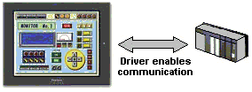
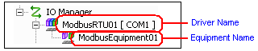
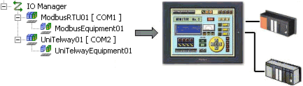

|
|
|
|
|
|
|
|
To make data exchange possible, drivers refer to programs that act as bridges between the runtime and equipment. You do not need to create a complicated program for communication. Simply add and configure the driver to enable communication between the target machine and equipment.

In the Navigator window, right-click the I/O Manager node and then click New Driver.
In the New Driver dialog box, select the Manufacturer, Driver, and Equipment.
Manufacturer is the manufacturer of the equipment. To connect a bar code scanner, select Generic.
Driver is the name of the driver. For more information, see Appendix 2, Device Driver Manuals.
Equipment represents the equipment connected to the target machine.
Example
Connecting a Schneider Electric PLC, TSX Series CPU model Momentum 171 CCC 980 20.
|
System Structure |
Schneider Electric PLC TSX Momentum 171 CCC 980 20 |
|
In Vijeo-Designer, select the following. |
Manufacturer: Schneider Electric. Driver: Modbus (RTU) Device: Modbus Equipment |

The Driver and Equipment configuration settings differ depending on the model of the equipment. For information on which driver and equipment to select for your particular piece of equipment, see Appendix 2, Device Driver Manuals. If you select the wrong driver and/or equipment, communication will fail.
When you want to write your own serial communication program, use scripts. See Section 18.8, Using the Script Driver.
Click OK to add the selected driver and device below the I/O Manager node.


To connect multiple equipment to your target machine, repeat steps 1 to 3 for each equipment.

For more information, see Section 6.3.2, Dividing Variables into Scan Groups.